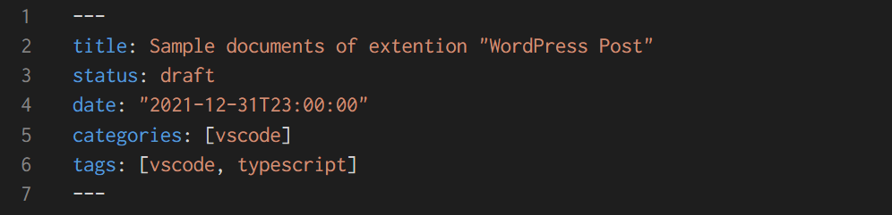

This is sample document of extention "WordPress Post". Test of Line Break.
Test of new paragraph.
Test of headline level 2.
Test of headline level 3.
import requests
SITE_URL = "https://yoursite"
API_URL = f"{SITE_URL}/wp-json/wp/v2/"
AUTH_USER = "zzzz"
AUTH_PASS = "xxxx xxxx xxxx xxxx xxxx IxxxxYT4"
res = requests.get(API_URL, auth=(AUTH_USER, AUTH_PASS))
print(res.json())
| label | API |
|---|---|
| category | /wp-json/wp/v2/categories |
| tag | /wp-json/wp/v2/tags |
| media | /wp-json/wp/v2/media |
| post | /wp-json/wp/v2/posts |
Abount local(relative path) image, this extention uploads and replaces local url to wordpress url:

Abount www() image, this extension is ignore this.
That's all.